Project 3 - IMAGE WARPING and MOSAICING
A.1
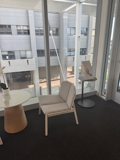
image of study space
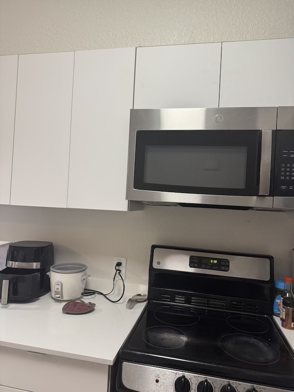
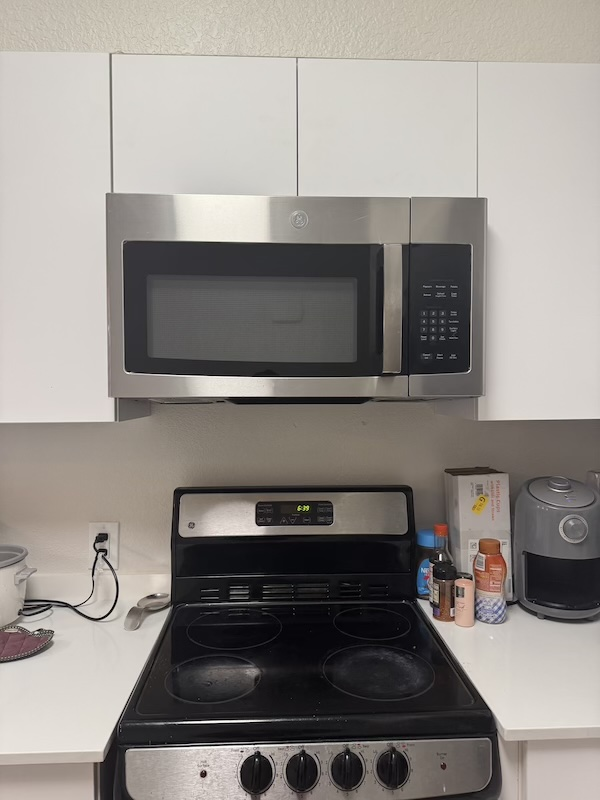
image of kitchen.
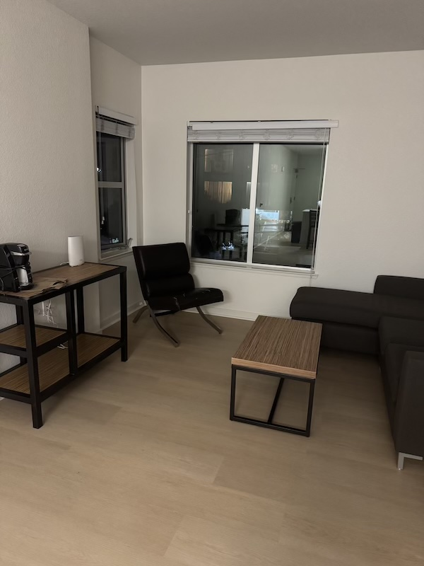
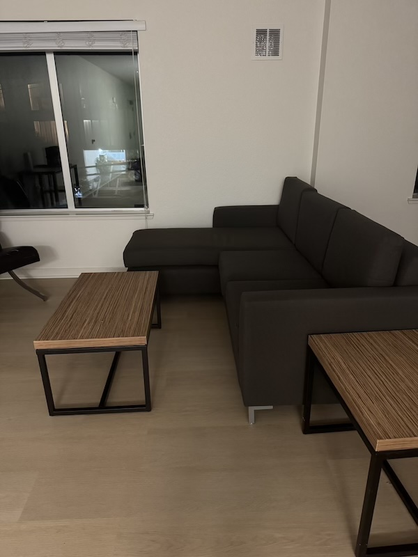
images of living room.
A.2
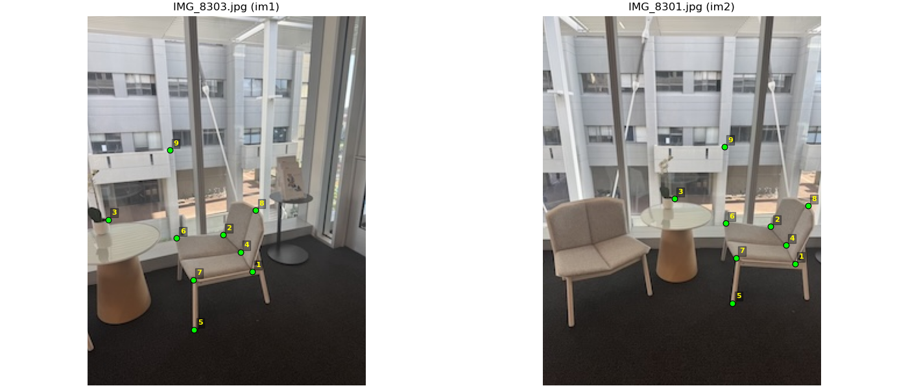
Caption (H2 Row 1).

Caption (H2 Row 2).
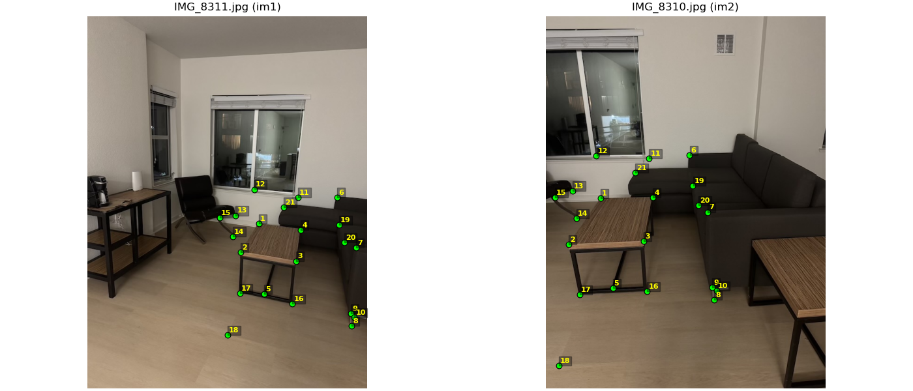
Caption (H2 Row 3).
Paragraph for Heading 2 section. Replace with your text describing the sets above.
A.3
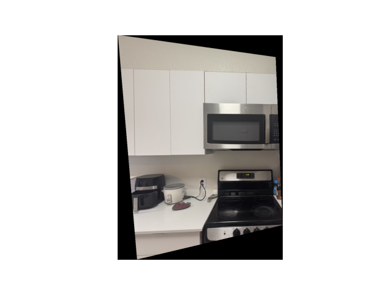
Original, NN, Bilinear.\n Warp (NN) took 1.840 s (1840.3 ms)
Warp (Bilinear) took 4.307 s (4307.2 ms)
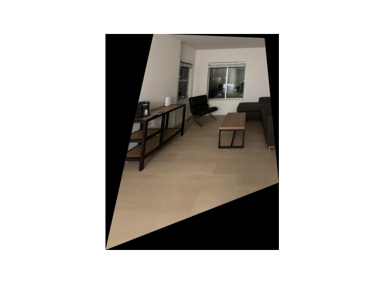
Original, NN, Bilinear.\n Warp (NN) took 3.125 s (3124.7 ms)
Warp (Bilinear) took 6.625 s (6625.3 ms).
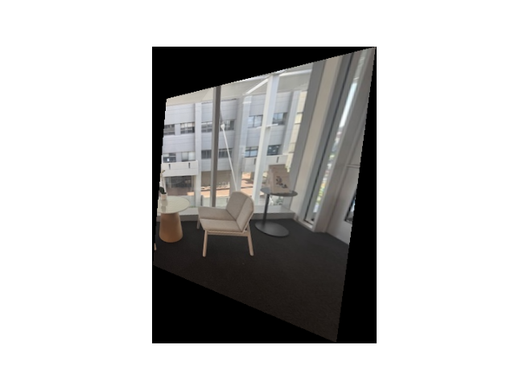
Original, NN, Bilinear.\n Warp (NN) took 0.328 s (328.2 ms)
Warp (Bilinear) took 0.699 s (698.5 ms)
NN is faster but Bilinear produces better quality
A.4
Caption (H4 Group 1 — two images).
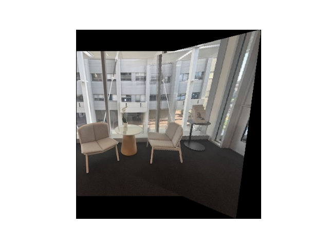
Caption (H4 Group 1 — single image).
Caption (H4 Group 2 — two images).
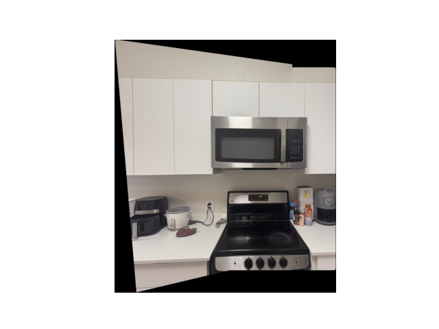
Caption (H4 Group 2 — single image).
Caption (H4 Group 3 — two images).
 Caption (H4 Group 3 — single image).
Caption (H4 Group 3 — single image).
Paragraph for Heading 4 section. Final notes, context, credits, etc.
Part B.1
Original image
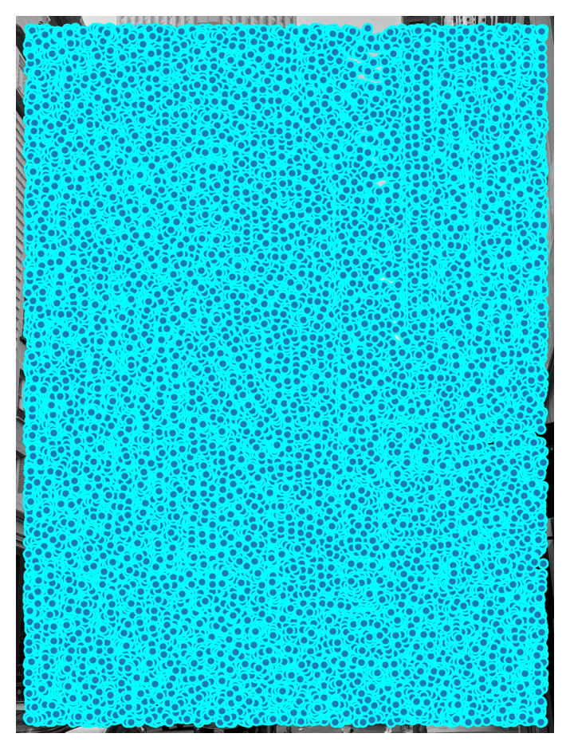
without ANMS
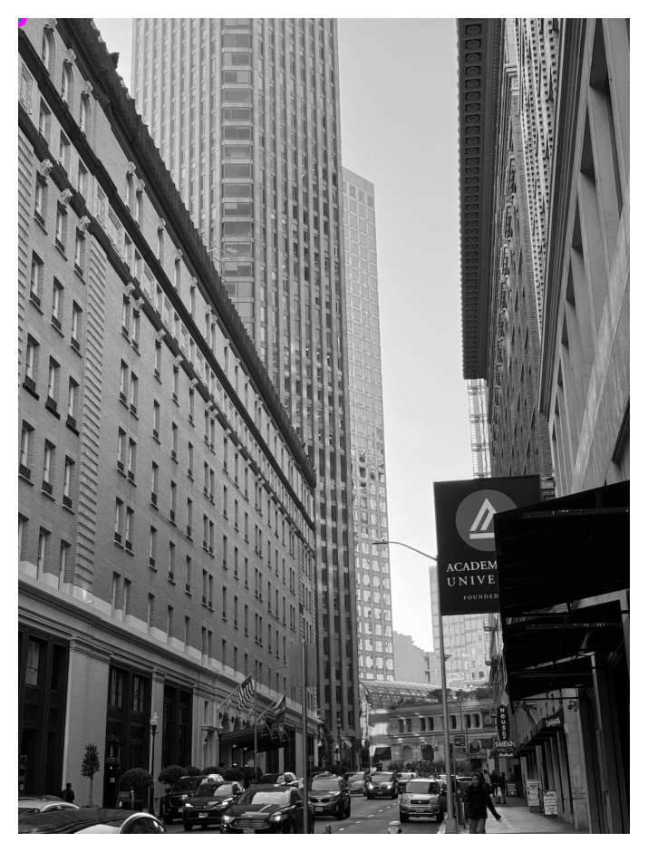
with ANMS
-
Compute corner strength f(xi) (e.g., Harris response) for each interest point.
-
For every point xi, find its suppression radius ri:
ri = minj ||xi − xj||
s.t. f(xi) < crobust · f(xj)
-
Here, xj are stronger neighbors, and crobust ≈ 0.9 ensures the neighbor must be significantly stronger.
-
The radius ri measures how far you must go from xi to find a clearly stronger corner.
- Strong isolated points → large ri
- Weak clustered points → small ri
-
Select the top N points with the largest radii — these are spatially diverse yet strong corners.
Part B.2
 Caption for B2 image.
Caption for B2 image.
Paragraph for Part B.2. Explain the context and result here.
Part B.3
 Caption for B3 image.
Caption for B3 image.
Paragraph for Part B.3. Notes, settings, and analysis.
Part B.4
Paragraph for Part B.4. Summarize comparisons across the grids above and key insights.